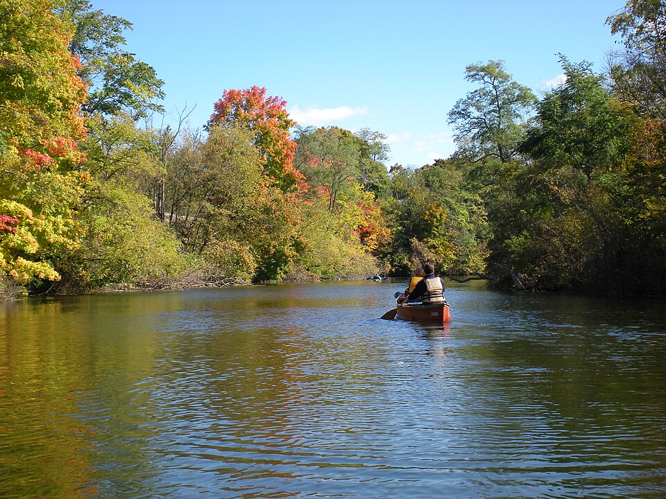
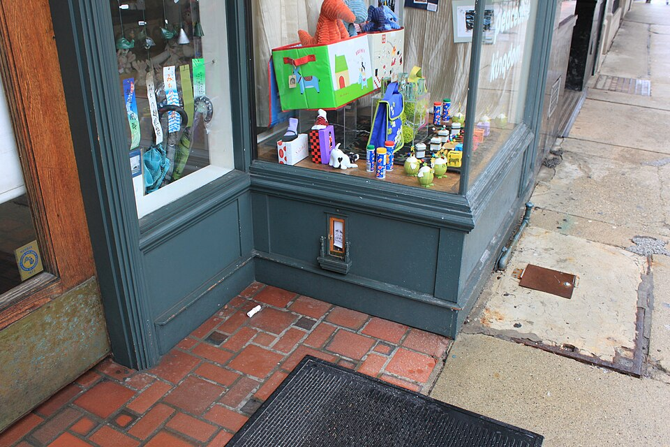
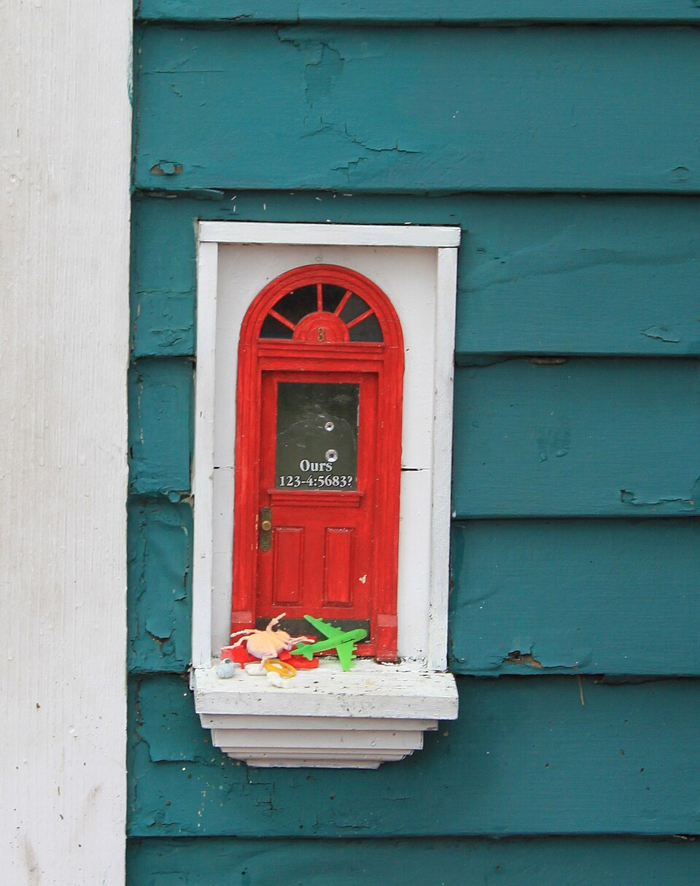
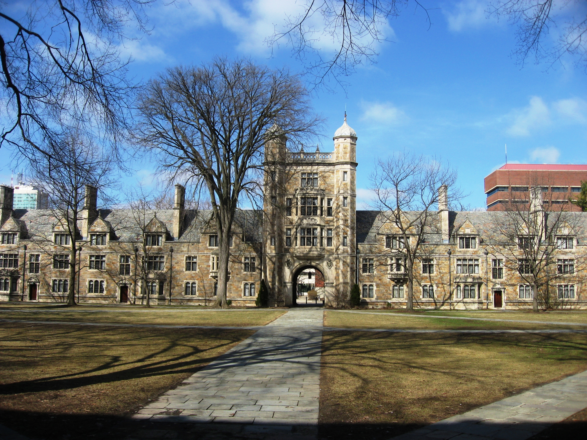

Current Exhibits
The Ann Arbor Art Museum presents exhibitions inspired by the city of Ann Arbor, Michigan. The museum explores the relationship between art, local history, public space, student life, neighborhood identity, and the natural environment of the Huron River watershed.
Current exhibits highlight the city’s downtown streets, historic theaters, university landmarks, parks, murals, independent bookstores, seasonal festivals, and creative communities. Visitors are invited to think about how art can help people understand the character of a place.
Exhibit One: The Huron River and the Shape of the City

This exhibit explores how the Huron River has influenced Ann Arbor’s growth. Through maps, photographs, paintings, and community interviews, visitors learn how the river connects neighborhoods, parks, bridges, trails, and gathering spaces.
Exhibit Two: Ann Arbor’s Fairy Doors


Ann Arbor’s fairy doors are a beloved form of public art and local storytelling. These miniature doors appear in unexpected places throughout the city, including shops, theaters, cafes, offices, and community spaces. They invite visitors to slow down, look closely, and notice details they might otherwise miss.
This exhibit explores how the fairy doors connect art, imagination, local business culture, and walking through downtown Ann Arbor. Visitors can study photographs, maps, sketches, and recreated miniature doors while considering how public art can transform ordinary spaces into places of curiosity and delight.
- Look closely at storefronts, walls, and corners while walking downtown.
- Compare the design of different fairy doors and their surrounding spaces.
- Think about why small artworks can become important community landmarks.
- Consider how Ann Arbor’s playful public art reflects the city’s creative identity.
Exhibit Three: Campus, Community, and Creative Exchange

The University of Michigan is deeply connected to Ann Arbor’s cultural life. Students, faculty, staff, visiting artists, researchers, and local residents all contribute to the city’s creative identity.
This exhibit includes artwork inspired by the Diag, the Law Quadrangle, campus museums, student publications, performance spaces, public lectures, and the movement of people between campus and downtown.
Exhibit Four: Kerrytown, Markets, and Everyday Design
Kerrytown is one of Ann Arbor’s most recognizable districts, known for the Ann Arbor Farmers Market, small shops, local food, crafts, music, and weekend foot traffic. This exhibit focuses on everyday design: handmade signs, market displays, ceramics, textiles, posters, and neighborhood architecture.
Visitors can compare contemporary photographs of Kerrytown with older images of the area to see how the neighborhood has changed while still maintaining a strong local identity.
- Market culture: Artists document produce stands, handmade goods, and public gathering spaces.
- Local business signs: Designers study typography, color, and storefront identity.
- Neighborhood memory: Photographs show how buildings and streets change over time.
- Public interaction: Sketches and interviews record how people use shared spaces.
Programs Connected to the Exhibits
The museum offers gallery talks, walking tours, sketching sessions, student workshops, and community storytelling events connected to these Ann Arbor-focused exhibitions.